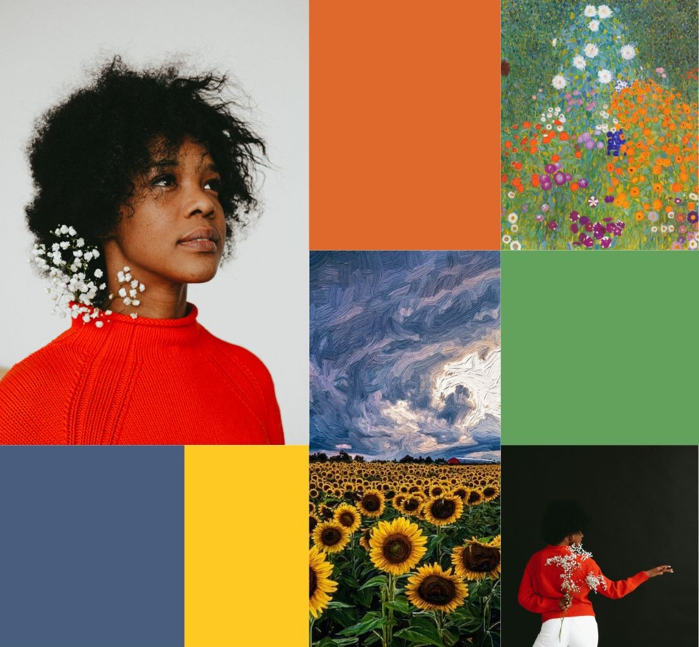

Galería

"Tapiz de primavera"
Refleja la transición de colores en la naturaleza.
Técnica: Pincel seco. Medidas: 40x60 cm.

"Tempestad de Oro"
Captura la magia de la naturaleza
Técnica: Stippling. Medidas: 40x60 cm.

"Pradera Serena"
Representa la calma de un paisaje.
Técnica: Scumbling. Medidas: 60x80 cm.
Sobre mí

Evelyn Barboza (Uruguay, 1993) es una artista plástica autodidacta con una trayectoria que inició en 2010. A lo largo de los años, ha desarrollado un estilo distintivo que fusiona técnicas tradicionales con una visión personal y contemporánea.
Su obra encuentra su principal fuente de inspiración en la naturaleza, explorando la profundidad de los paisajes a través del uso de pinturas acrílicas sobre lienzo. Influenciada por la luz y el movimiento de maestros como Monet y Van Gogh , Evelyn emplea una variedad de pinceles para crear texturas y detalles que invitan a contemplar el entorno natural desde una sensibilidad única.
Trayectoria
Inicios Artísticos
Comienza su formación autodidacta a los 16 años, desarrollando las bases de su estilo personal.
Museo de Artes Visuales
Primera muestra individual en el Museo de Artes Visuales de Montevideo.
Gira Cultural y Reconocimiento
Talleres en Durazno y distinción nacional por su aporte a la cultura uruguaya.
Expansión Internacional
Cruza fronteras para presentar su obra en Argentina.
MACA
Exposición en el prestigioso Museo de Arte Contemporáneo Atchugarry.
Servicios
Arte por Encargo
Transformo tus ideas en lienzos únicos. Cuadros personalizados que capturan momentos y paisajes con una sensibilidad especial.
Talleres Creativos
Clases de pintura y dibujo para niños, jóvenes y adultos. No se necesita experiencia previa, solo ganas de crear.
Presencia en Galerías
Participación constante en ferias de arte y exhibiciones en todo el país, llevando la naturaleza al lienzo en cada rincón de Uruguay.
Eventos
14
MAY
Taller Abierto de Acrílico
16:00 - 18:30 | Centro Cultural Palermo, Montevideo
Taller Abierto de Acrílico
16:00 - 18:30 | Centro Cultural Palermo, Montevideo
28
MAY
Clínica de Paisajes
10:00 - 13:00 | Espacio Arte Sur, Canelones
Clínica de Paisajes
10:00 - 13:00 | Espacio Arte Sur, Canelones
09
JUN
Muestra Colectiva "Luz y Movimiento"
19:30 | Sala Municipal de Exposiciones, Maldonado
Muestra Colectiva "Luz y Movimiento"
19:30 | Sala Municipal de Exposiciones, Maldonado
22
JUN
Workshop Intensivo de Texturas
15:00 - 19:00 | Atelier Evelyn Barboza, Montevideo
Workshop Intensivo de Texturas
15:00 - 19:00 | Atelier Evelyn Barboza, Montevideo
Preguntas frecuentes
¿Cómo puedo encargar una obra personalizada?
Puedes contactarme a través de WhatsApp, Instagram o email para contarme tu idea. Luego coordinamos detalles como el tamaño, la técnica y los tiempos de entrega.
¿Cuánto demora la realización de un cuadro?
El tiempo depende del tamaño y la complejidad de la obra, pero generalmente varía entre 1 y 3 semanas.
¿Qué técnicas utilizas en tus obras?
Trabajo principalmente con pintura acrílica sobre lienzo, utilizando técnicas como pincel seco, stippling (punteado) y scumbling para lograr diferentes efectos.
¿Las clases de arte son para principiantes?
Sí, las clases están pensadas para todas las edades y niveles, desde principiantes hasta personas con experiencia previa.
¿Dónde se realizan los talleres?
Los talleres se realizan en distintos puntos de Uruguay. Las fechas y ubicaciones se publican en la sección de eventos.
¿Realizas envíos dentro de Uruguay?
Sí, realizo envíos a todo el país. Los costos y tiempos de envío se coordinan al momento de la compra.